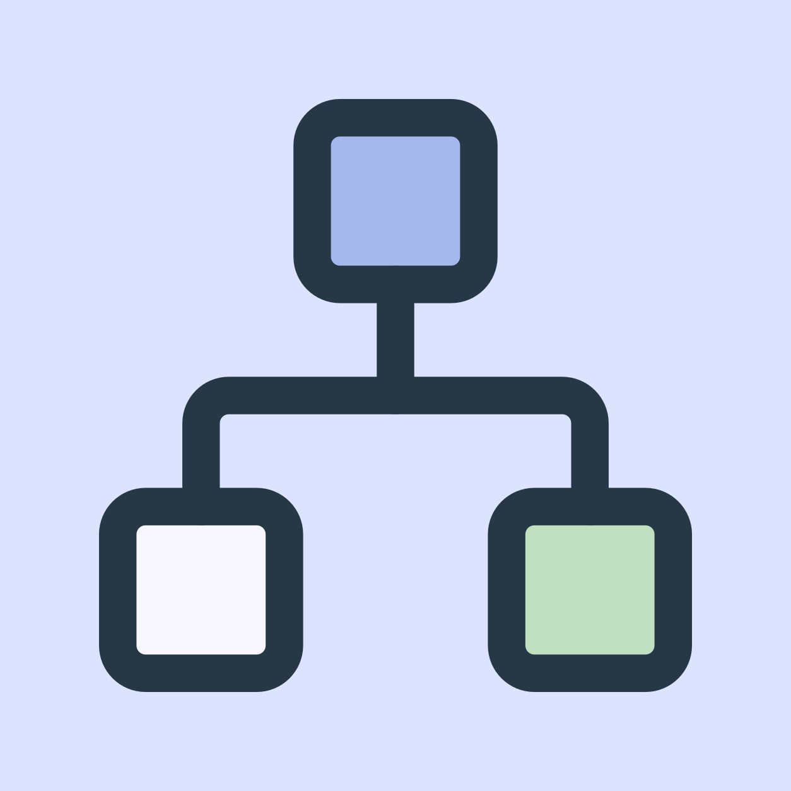

Specialty experience
Physiotherapy & Rehabilitation
Progress and changing goals are inherently longitudinal and should remain attributable over time.

Trusted Discovery
Useful education with a visible basis.
Represent the doctor's actual scope, preserve material qualifications and avoid unsupported superiority claims.
Deeper Engagement
Prepare without pretending to diagnose.
Ask only what changes preparation, practice fit or the appropriate next step.
Better Informed Care
Carry the account forward.
Show what the patient reported, what changed and what remains unresolved when the doctor becomes involved.
What matters in Physiotherapy & Rehabilitation communication
Practice fitHelp the patient understand the doctor's actual services, populations and locations.
Useful preparationOrganize chronology, goals and relevant reported details without converting the preparation into a diagnostic conclusion.
Evidence and limitsPublic education should make uncertainty understandable and route patient specific judgment to the doctor.
Build a trusted Physiotherapy & Rehabilitation presence.
Connect reviewed education, patient preparation and doctor involvement through the same practice relationship.